The goal
Plenty of Fish's livestreaming product, POF Live, had a separate onboarding experience. We wanted to increase product activation (defined as getting a user to watch a stream for 1+ minute) by helping first-time users understand what Live actually was and why they might want to use it.
Usability testing the existing experience
Before redesigning the flow, I ran moderated usability tests through UserTesting.com with 11 singles who had never used Plenty of Fish. I wanted to understand the mental model people brought into the experience, how that model changed screen by screen, and what they believed they would be able to do once onboarding was complete.
The main issue wasn't simply that individual screens were unclear. Users were constructing a different product in their heads: many expected 1-to-1 video chat, group video calling, or a dating-game experience rather than livestreaming. The onboarding added some clarity, but it didn't fully correct those expectations.
Most users initially assumed “Live” meant talking to another single in real time, often by video.
Different screens suggested group video, a dating game, events, and creator content without clearly explaining the core livestreaming experience.
It was the easiest feature for users to connect back to the reason they were on a dating app in the first place.
Users were nervous about being on camera, large audiences, and the amount of gamification visible in Live.
Research summary deck
I pulled the findings into the deck below so the team could see the full progression of users' expectations rather than only a condensed list of takeaways.
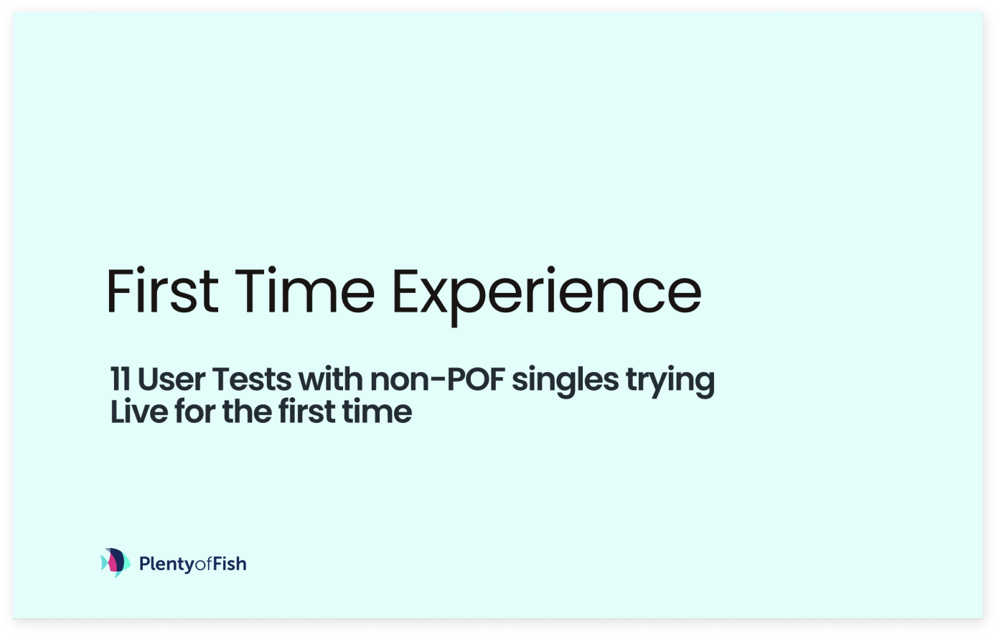
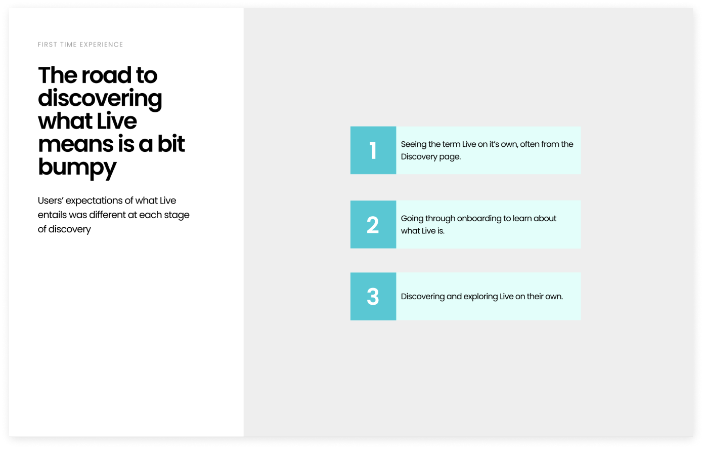
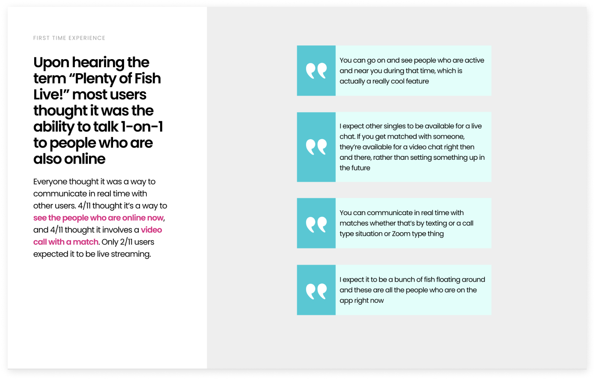
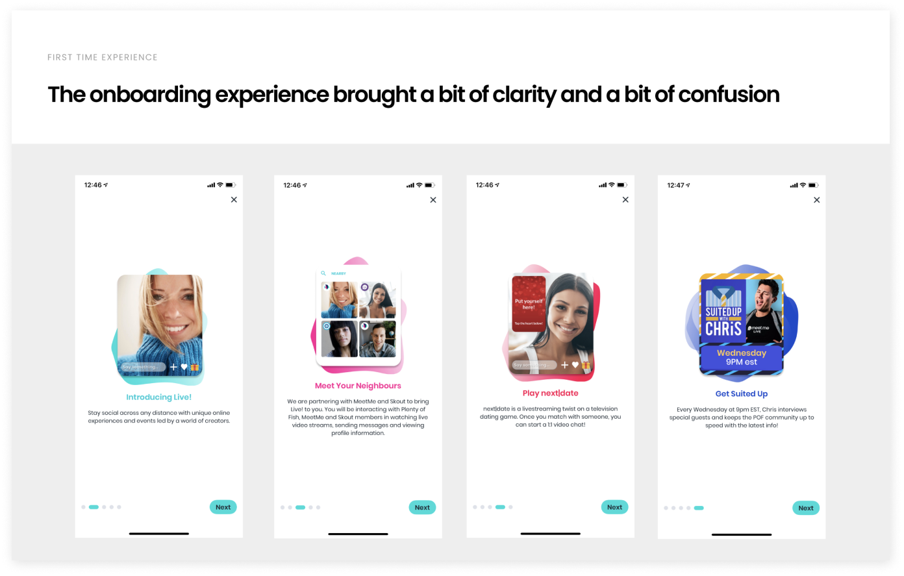
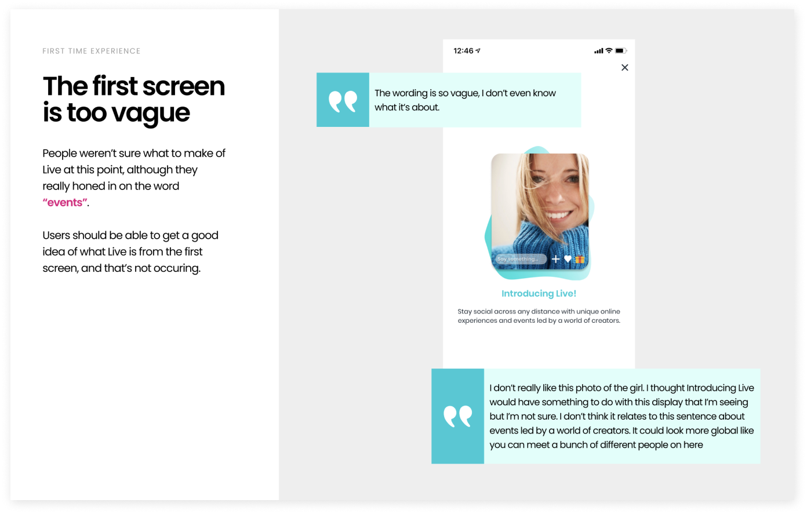
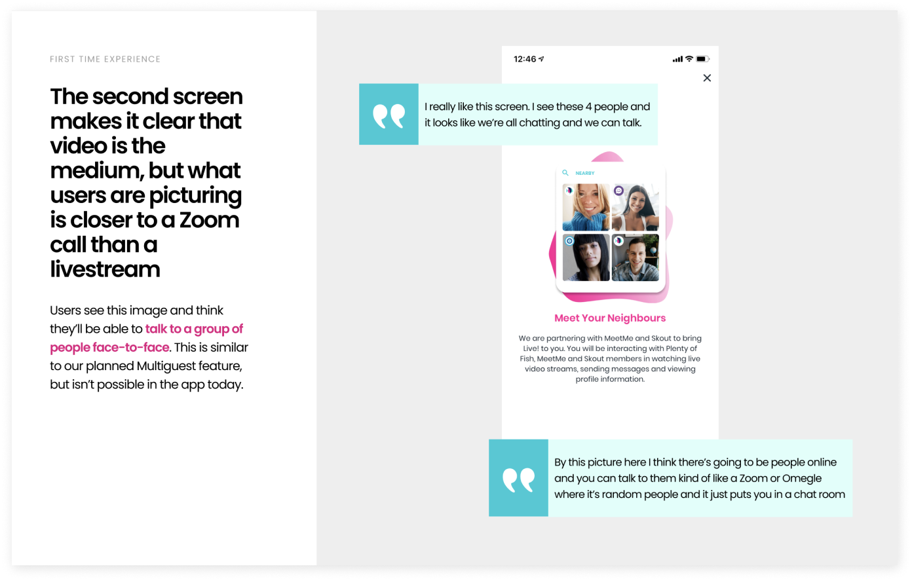
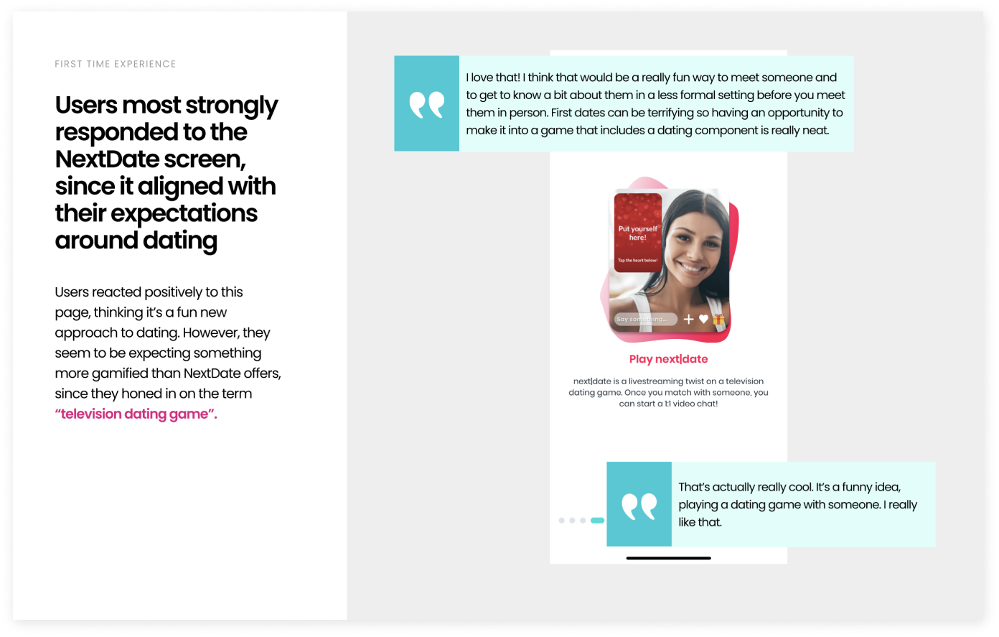
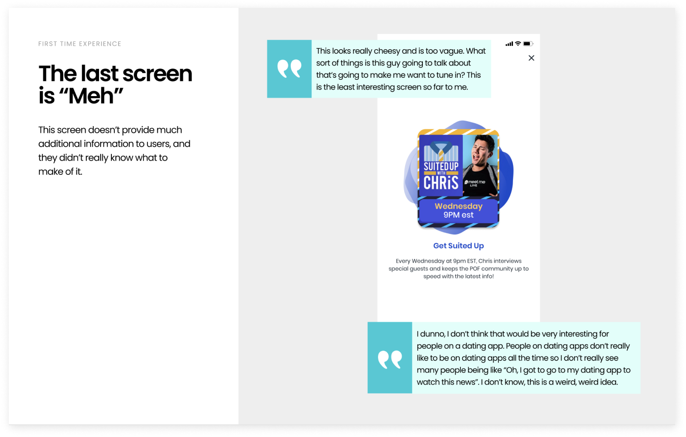
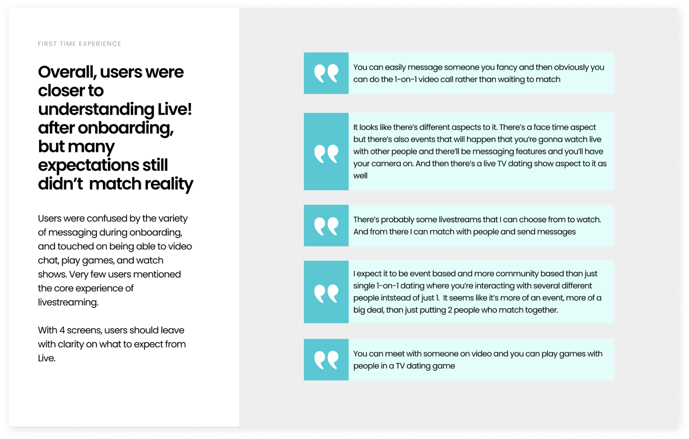
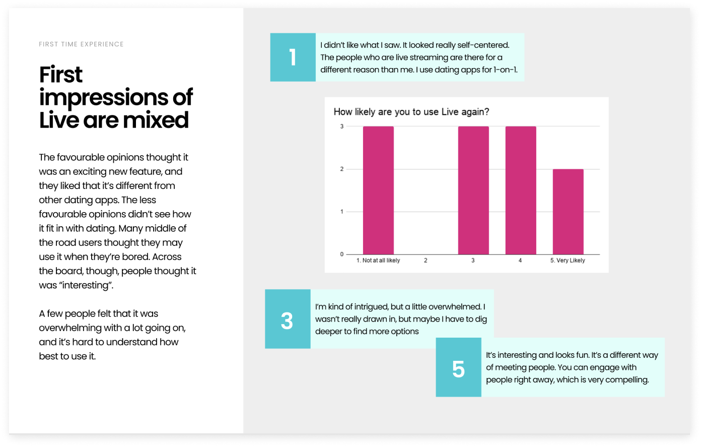
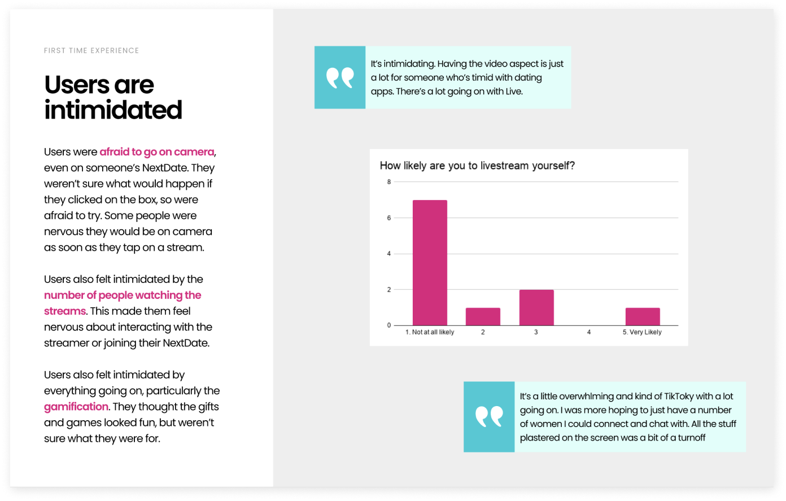
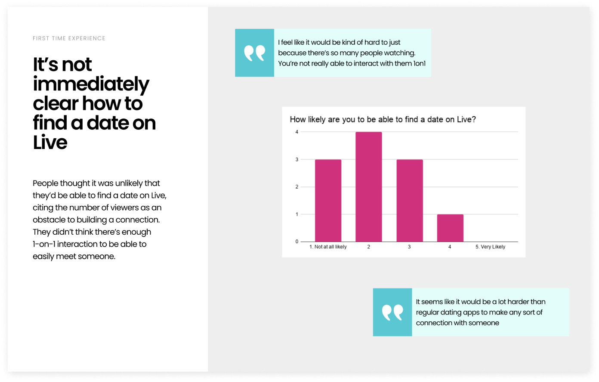
Redesigning the onboarding
Based on the research, I redesigned the onboarding to be more understandable, more concise, and more consistent with the current POF brand. The goal was to explain the core experience more directly instead of asking users to infer what Live was from several loosely related examples.
The revised flow focused on the behaviours that mattered most: watching people livestream, interacting through chat and gifts, going live yourself, and using Live as another way to meet people on POF.
Result
We ran extensive A/B testing on the new onboarding. The redesign increased product activation by 5%, meaning more users made it through onboarding and watched a Live stream for at least one minute.
The new onboarding increased activation by 5%.